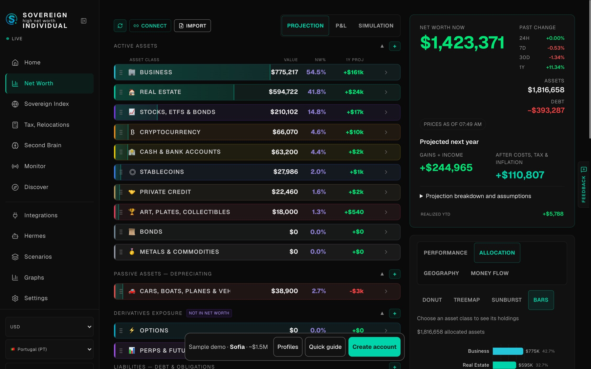

Sovereign HNI
Wealth, with perspective.

A clearer view of
your financial world.
A net worth tracking platform for high net worth individuals. Bringing global assets, graphs and analytics together with the Sovereign Index.
Explore Sovereign (opens in a new tab)Finance & wealth
A single place to understand the bigger picture.